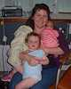
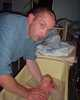
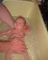
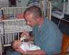
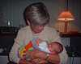

15th September 2001
Poppy has been very settled and contented with breast feeding. She seems to be ready for on-demand feeding, which Sharon is very keen to move on to. She needs a little more oxygen when she feeds, but this increased level is actually lower than her normal requirement last week. She is progressing well.
14th September 2001
Poppy now weighs 5lb 12oz. This is very good, since she has been taking less milk top ups recently. She had two very good breast feeds with no top ups and two really good bottle feeds today, taking all her milk. Her oxygen requirement seems to be reducing still more.
13th September 2001
Poppy has had a very good day feeding today. She fed on demand this morning and had a good bottle feed this evening. We think she may have colic though. She will be weighed this evening.
12th September 2001
Poppy was weighed last night and is now 5lb 10oz. She breast fed well today and only took 15ml of milk by tube, out of a possible 80ml. Even that was probably too much as she looked very uncomfortable. Poppy's oxygen requirement seems to have decreased.
This evening Poppy was moved to Special Care, which is the last stop before going home!

11th September 2001
Poppy had her eyes tested today and the doctor feels that they are getting a bit better. Poppy was very sleepy this morning, so did not take much food by breast feeding. Poppy had a very good bottle feed this evening and took half od her feed that way. Her oxygen levels are still low.
10th September 2001
Poppy had a good day today. She was weighed last night and is now 5lb 8oz. She had two breast feeds and a bath and bottle feed this evening.



9th September 2001
Poppy breast fed really well this morning and again had only half of her tube feed afterwards. She had her second set of immunizations this afternoon. Poppy had a really lovely kangaroo cuddle (skin-to-skin) with Sharon soon after her injections and at one point, the prongs holding the low-flow oxygen in place were completely out of her nostrils; providing her with practically no oxygen at all. She didn't seem to need them. The nurses said that it is usual that babies who need oxygen at other times, don't seem to need it when being cuddled.
